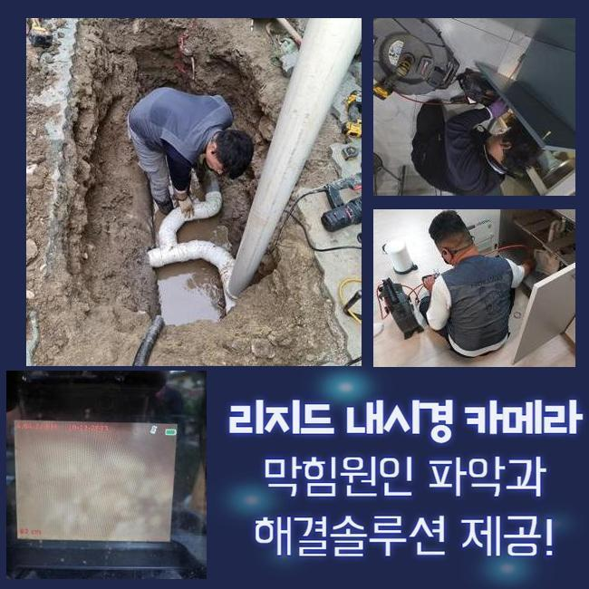
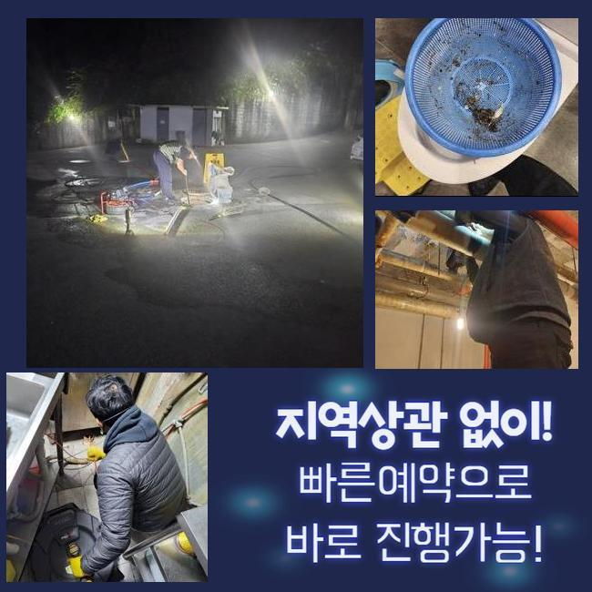
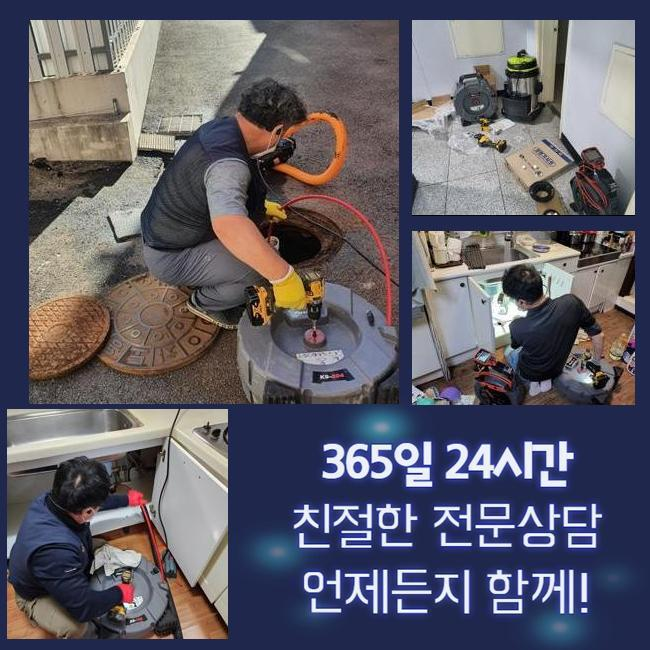
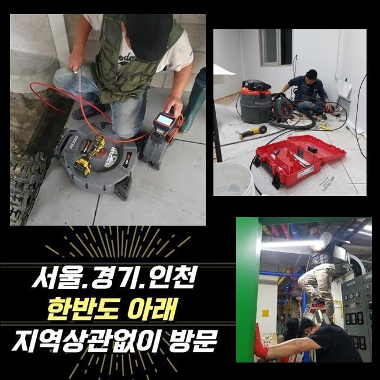
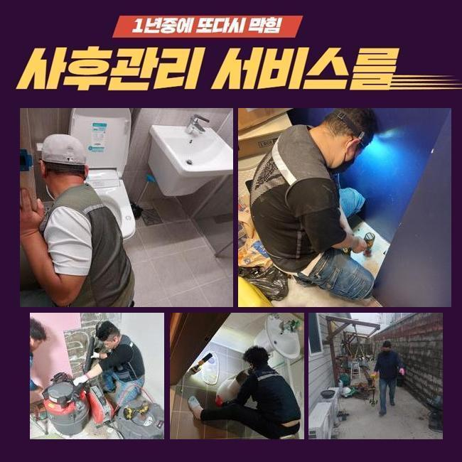
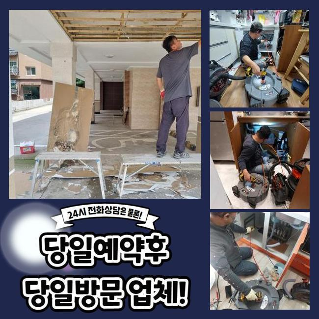
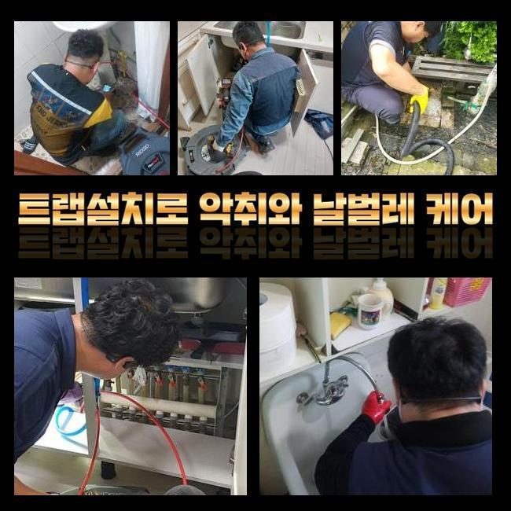

🏠 종로 숭인동대변기막힘 수송동 하수구청소장비 물샘전문업체
용인시 처인구 배관막힘 전문 시공 후기

📋 작업 개요
- 위치: 용인시 처인구, 수원시 영통구, 화성시 동탄
- 서비스 유형: 배관막힘, 하수구청소, 고압세척, 내시경점검
- 작업 일시:
- 업체명: 하수구수사대 (010-5615-2118)
🔍 문제 상황
종로 숭인동대변기막힘 수송동 하수구청소장비 물샘전문업체
배수정체와 물솟음이 예기치못하게 야기되어 난처함을 겪는다는 문의로 신속히 내방했어요
건물들을 건설할땐 배수들이 문제없이 진행되도록 배수관을 설치하죠
배수관은 매립시간들이 장기화될수록 여러가지의 증세를 야기시킵니다
대표되는 증상으로는 통수정체로 노후를 동반하여 발생되는 이물이 퇴적됨과 동시에 잔해물들이 하수도로 빠질 시 꺾여지는 부위에서 축적을 거듭해 통수오류를 불러일으키죠
역류하는 증상처럼 문제들이 외부적으로 나타나버린 경우라면 안쪽부분엔 상당한 이물들이 쌓였을 가능성들이 높아서 전문업체들의 손을 빌리는것이 권장드리는 방식이라 볼 수 있죠
연식자체가 오래되었다면 노후화의 확률들이 높으며, 배수관으로 대표되는 시설도 내식성 하락이 신속히 드러날 여지가 높습니다
내방했던 장소에서도 노후화가 진행되어 막힘들이 야기되었을 가능성이 있다고 추측했어요

🔎 원인 분석
💡 전문가 진단: 정밀 진단 장비를 사용하여 슬러지의 고착 여부를 판명하고 타격/세척 작업을 실시했습니다.
고객분은 이전에 통수가 온전히 이뤄지지 못하는 문제들을 보았으나 괄목할만한 불편을 미치지못한다는 생각으로 증상들이 발생될때까지 방치를 거듭하셨대요
그 와중에 역류증세를 불거진 걸 목격하시고는 조속히 저희전문진에게 문의해주셨어요
관련 문제들이 발생되면 시발점과 연관하여 나타나는 현상들은 다 달라요
보통의 현장의 경우 알맞은 작업들이 진행되지 못하면 벽부분에까지 쌓인 이물들이 통수의 유수를 막아서는 원인들로 자리잡아 솟구치는 증상도 동반시키게되죠
덧붙여 연결되는 쪽에 자리한 잔해는 물이 닿았을 때 상하기 쉽상인데 이것때문에 냄새들이 발생되며 보건성을 떨어뜨리는 요소들로 작용합니다
그렇기에 외부로 증상들이 관찰되면 무거운 상태라는걸 아시고 서둘러 전문가의 손길을 빌리는걸 권장드려요
세척들을 시작할 땐 저희들은 내시경장치를 통해 연관된 설비들을 체크해보는 절차들을 진행합니다
내시경기기는 송출부와 이어져있어서 두눈으로 볼수가 없는 관로를 어렵지않게 파악케하죠

🔧 작업 과정
영상관찰을 통하여 군데군데 꼼꼼히 체크하면 증상의 근간이 되는 부위들을 정확히 짚어주어 세척들을 수행하는것이 가능하죠
내시경장치는 배수정체를 시정해줄 때 없어선 안되는 장치지만 육안으로 추측한다거나 번거롭단 판단 하에 넘어가버리는 현장도 이따금씩 목격되죠
점검하는 과정을 거치지않은 채 무턱대고 작업들을 진행하면 목표가 되어야 할 이유들을 제거시키지 못하게되는 결과물을 야기시킨다는걸 기억해주세요!
구석구석 관련 시설을 확인하니 내구성에 따라서에는 예상보다 상당한 잔재가 퇴적된 걸 확인하였어요
중간엔 뭉쳐져서 돌과 같이 굳어버렸고 벽라인에 흡착도 이뤄지게되며 배수과정의 단계들을 막고 있었던 모습을 확인했습니다
작업규모와 반경들이 협소하다면 장치들을 사용하여 잔재들을 없애주어 간단히 증세를 잠재우겠지만 오늘과같이 연결부분마다 작업들을 수행해야 될 땐 고압노즐 장비를 이용하여 집수지점까지 청소하는게 권하는 조치라 할 수 있습니다
고압수청소는 노즐부분에서 발사되는 수압을 이용하여 잔재들을 제거시키는 방식인데요 화학품들을 쓰는것이 아닌 청수를 쓰는 것이기에 세척 마무리가 된 다음 수돗물을 쓰시는것이 무방할만큼 안정적인 작업이겠습니다
덧붙여 하수도를 매립할 당시와 가깝게 되돌려 필요치않은 하수구 증세를 예방시켜주는 효과들도 보입니다
통수오류가 빈번히 야기되는 경우일땐 업체들을 반복해서 부른 후 이물질 파쇄 세척들을 수행하기보다는 때에 맞춰 고압수청소를 수행하는게 합리적인 방식이라는 걸 기억해주신다면 좋겠습니다
이번 현장의 경우엔 내구성에 따라서 잔재가 쌓인 탓에 적재적소 도구를 이용하여 세척을 진행했는데요
일단 간단한 방법들을 써서 입구쪽에 쌓인 부유물을 제거시키고 일부분 통수절차의 흐름이 진행되서 밖으로 이동해 고압 세척 청소들을 진행했죠
구간별로 압에 차이를 주어 꾸준히 세척 작업들을 이행했더니 예부터 각 관로에 퇴적된 이물을 깨끗히 청소해드렸습니다


✅ 작업 완료
확인 차 내시경기기를 삽입시켜 살펴보니 처음과는 다르게 깨끗해진 배수관을 관찰하게되었고 잔재와 같은 잔해물들을 구석구석 정리해준 뒤 전 단계를 종료했습니다
관련 피해들이 발생되었을 시점에 원인부를 가속화되어 세척하지 않는다면 알게 모르게 증세들이 발산하므로 관리가 필요하게됩니다
통수오류의 고충을 줄여나가자고 한다면 배수상태의 문제들이 비춰졌을 시 바로 전문업체들의 손을 빌리는것이 좋은데요
불러주시면 내방해서 오차없이 조속히 작업해드리니 해결책이 요구될 땐 그저 시간에 상관없이 연락하시면 되요!




⚠️ 하수구 배관 막힘 예방 및 관리 가이드
- ✅ 머리카락, 비닐, 물티슈 등 물에 분해되지 않는 이물질은 절대 흘려보내지 마세요.
- ✅ 기름기 많은 식기는 설거지 전 키친타올로 먼저 기름때를 닦아내세요.
- ✅ 주기적으로 배수구에 뜨거운 물을 가득 부어주어 유지방 고착을 방지하세요.
- ✅ 작업 후 1년 이내 재발 시 무상 A/S 보증 서비스를 제공합니다.
💡 핵심 정리
- 확실한 장비 작업(내시경 점검 및 샤프트 스케일링)으로 원인을 뿌리 뽑습니다.
- 작업 후 1년 이내에 동일한 부위 재발 시 100% 무상 A/S 서비스를 보장합니다.
- 서울 · 경기 · 인천 전 지역에 24시간 언제든 긴급 출동할 수 있도록 항시 대기 중입니다.
❓ 자주 묻는 질문 (FAQ)
🚨 용인시 처인구 배관막힘 문제로 고민이신가요?
정확한 원인 진단과 확실한 시공으로 재발 없는 해결을 약속드립니다.
24시간 긴급 출동 | 서울 · 경기 · 인천 전지역 | 1년 내 재발 시 무상 A/S